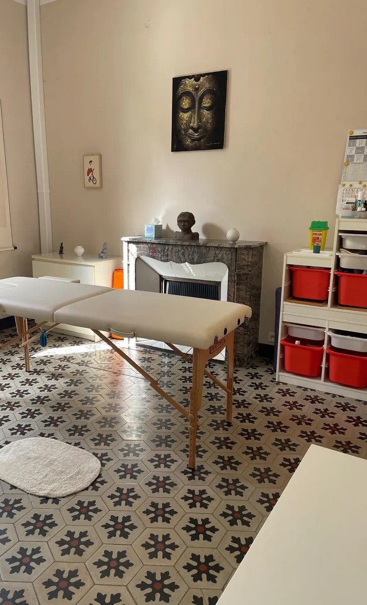

Un soin complet et personnalisé qui associe, selon vos besoins, les grandes techniques de la médecine chinoise : acupuncture, Tui Na, ventouses, moxibustion, auriculothérapie, réflexologie plantaire, électroponcture et huiles essentielles.

« Chaque séance est unique, construite à partir de votre bilan énergétique du moment. »
La séance débute par un temps d'échange et un bilan énergétique traditionnel (observation du pouls et de la langue, historique de santé, sommeil, alimentation, état émotionnel). Ce bilan permet d'identifier les déséquilibres à l'origine de vos troubles.
En fonction de ce bilan, une ou plusieurs techniques sont associées au cours de la même séance, qui dure environ une heure. La première consultation comprend un bilan plus approfondi.
Prendre Rendez-vousSelon votre bilan, la séance associe une ou plusieurs de ces techniques complémentaires.
L’acupuncture consiste à stimuler des points précis du corps à l’aide de fines aiguilles afin de rétablir l’équilibre énergétique, soulager les douleurs et accompagner le fonctionnement harmonieux de l’organisme. Votre sécurité est une priorité : toutes les aiguilles utilisées sont stériles, à usage unique et jetées immédiatement après utilisation. Elles sont ensuite collectées et traitées par une filière agréée, dans le respect des normes sanitaires et environnementales en vigueur.
Le Tui Na est un massage thérapeutique issu de la médecine traditionnelle chinoise. Grâce à des techniques de pression, de mobilisation et d’étirement, il aide à relâcher les tensions, améliorer la mobilité et favoriser la circulation de l’énergie.
Les ventouses utilisent un effet de succion pour stimuler la circulation sanguine et énergétique, dénouer les tensions musculaires et favoriser les processus naturels de récupération.
La moxibustion consiste à appliquer une chaleur douce sur des points d’acupuncture à l’aide d’armoise séchée. Elle est utilisée pour réchauffer l’organisme, soutenir la circulation de l’énergie et renforcer certaines fonctions physiologiques.
L’électropuncture associe l’acupuncture à une stimulation électrique de faible intensité afin de renforcer l’action des aiguilles, notamment dans le traitement des douleurs et des troubles musculo-squelettiques.
La réflexologie plantaire repose sur la stimulation de zones réflexes situées sous les pieds, en lien avec les différents organes et fonctions du corps. Elle favorise la détente et contribue au rééquilibrage global de l’organisme.
Les huiles essentielles peuvent être appliquées sur des points d’acupuncture ou des portions de méridiens afin de renforcer ou compléter l’action énergétique de la séance (ou entre les séances). Utilisées avec discernement, elles accompagnent la détente, le bien-être et soutiennent l’équilibre physique et émotionnel.
L’auriculothérapie repose sur la stimulation de zones réflexes situées sur l’oreille, considérées comme une représentation du corps, afin d’accompagner la prise en charge de nombreux troubles fonctionnels. L’auriculothérapie est particulièrement utilisée dans la gestion du stress, les douleurs et les addictions (arrêt du tabac). Utilisée en fin de séance à l’aide d’aiguilles semi-permanentes avec lesquelles le patient repart, cela permet de prolonger l’effet de la séance.
La séance de médecine traditionnelle chinoise accompagne notamment les problématiques suivantes :
Les séances durent environ une heure (un peu plus lors d'une 1ère cinsultation) et se déroulent au cabinet, à Hyères, sur rendez-vous uniquement. Consulter les tarifs.
Prendre Rendez-vous